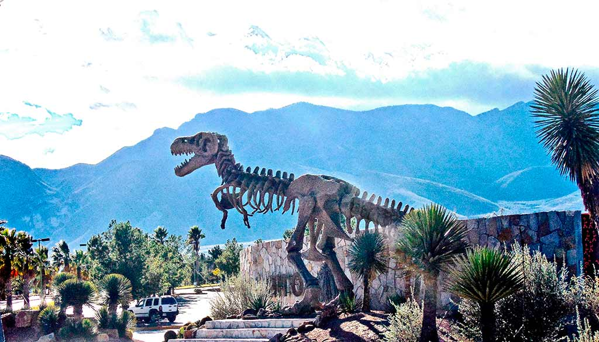
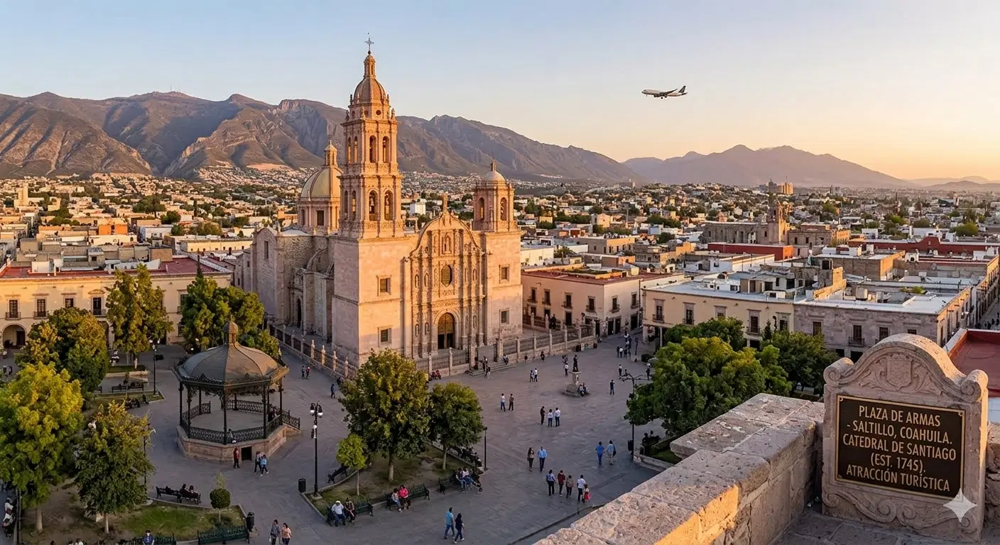
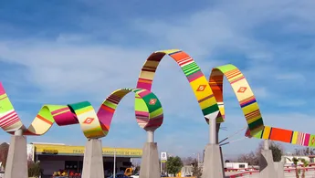

Tierra de Gigantes y Tradición
Saltillo es conocida como la cuna del sarape, el hogar del pan de pulque y la tierra donde habitaron los dinosaurios. Un lugar lleno de historia colonial, vanguardia industrial y el orgullo de su gente.
Usa la barra de navegación de arriba para explorar la comida típica, conocer nuestros lugares emblemáticos o dejar tus comentarios en el registro de visitantes.
|
 |
 |
 |